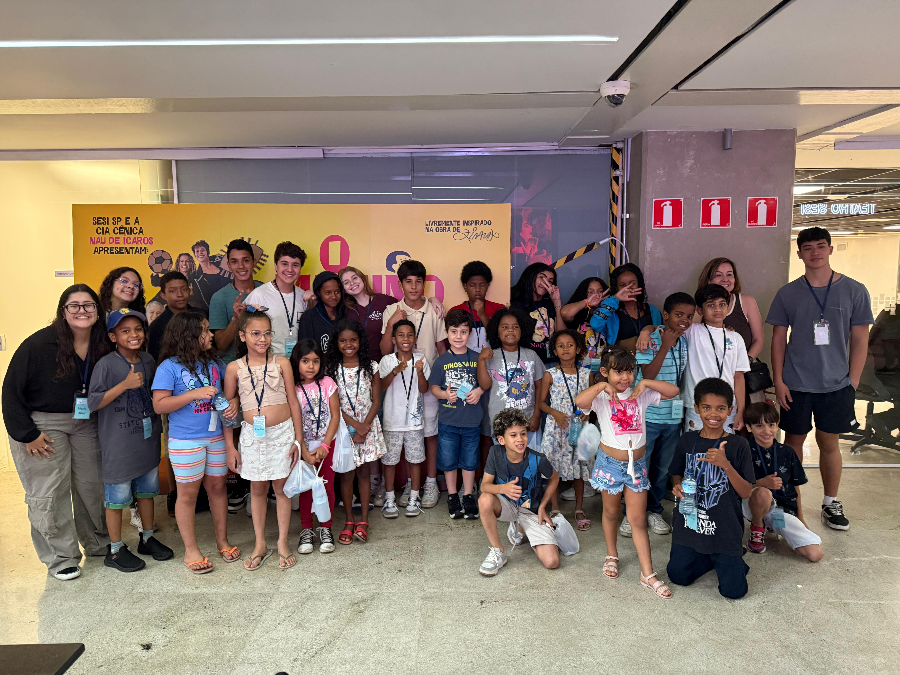
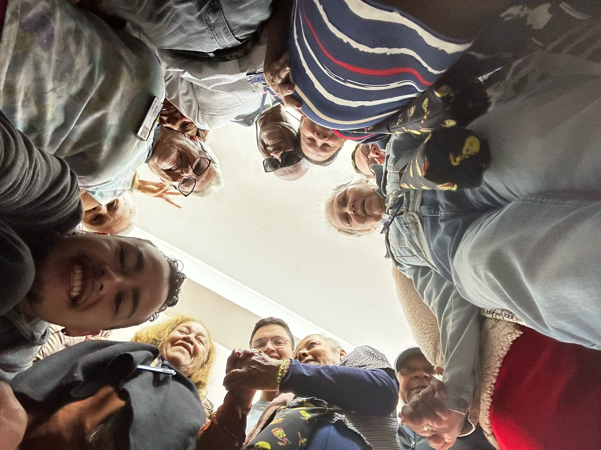
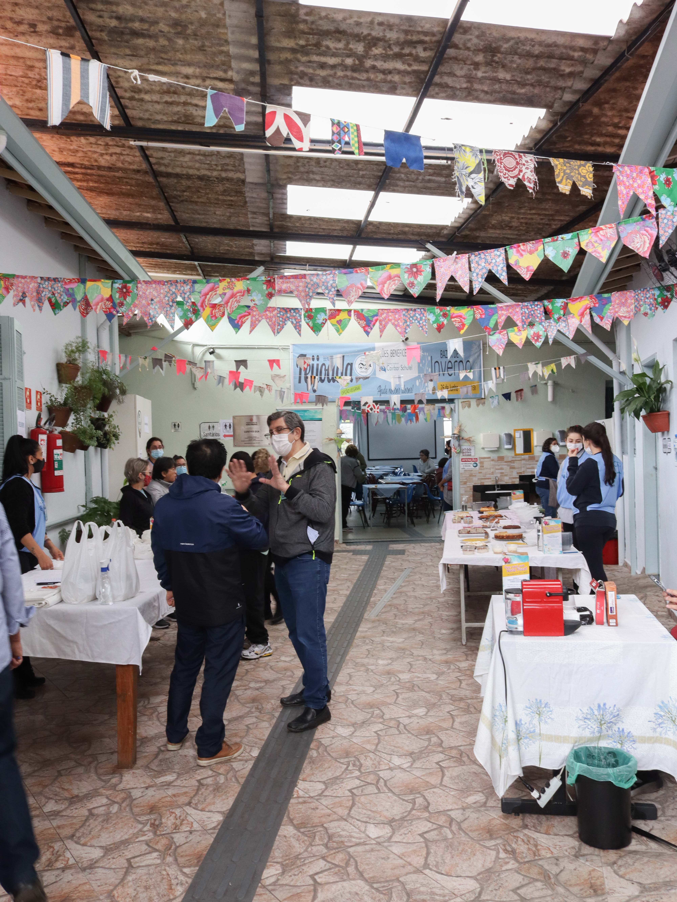

63 anos de um trabalho de amor!
O CACS | Complexo Assistencial Cairbar Schutel, associação filantrópica sem fins lucrativos, foi criado em 17 de janeiro de 1963 movido pela busca de uma sociedade mais justa e com mais oportunidades.
Saiba maisNosso Impacto
ANOS DE HISTÓRIA
CRIANÇAS E ADOLESCENTES ATENDIDOS
IDOSOS PASSARAM PELO CDI
DOAÇÃO DE ALIMENTOS
PESSOAS ATENDIDAS
NÚMERO DE PROJETOS

CACS
O CACS | Complexo Assistencial Cairbar Schutel trabalha para resgatar a dignidade e fomentar a autonomia de pessoas em situação de vulnerabilidade.
Saiba maisCDI - Centro Dia para Idosos
Atendemos até 30 pessoas idosas em vulnerabilidade social e com grau de dependência, que possuem limitações para realização das atividades de vida diária.
Saiba mais

CACS Bilíngue
Promovemos o aprendizado de um segundo idioma para crianças e adolescentes, ampliando horizontes e criando novas oportunidades de futuro.
Saiba maisCACS Florescer
Iniciativa focada no desenvolvimento integral e empoderamento, cultivando talentos e promovendo qualidade de vida para a comunidade.
Saiba mais
 15.50.28_09ae5eb0.jpg)
 17.05.04_b517889e.jpg)
Brechó Solidário
Nosso brechó é uma das principais fontes de recursos para a manutenção dos nossos projetos sociais. Aqui você encontra roupas, calçados e acessórios de qualidade por preços muito acessíveis.
Toda a renda é revertida para as famílias que apoiamos. Venha nos visitar, faça suas compras de forma sustentável e ainda nos ajude a transformar vidas!
Venha nos visitarEventos no CACS
Nossos eventos são momentos de muita alegria, união e solidariedade. Desde os tradicionais almoços beneficentes até a animada capoeira dos idosos e nossas campanhas contra a fome, cada encontro fortalece nossos laços com a comunidade.
Participar
Campanha Contra Fome
.JPG)
Capoeira dos Idosos

Almoços Beneficentes


CEDESP
Meta para 2026: Implantação do Centro de Desenvolvimento Social e Produtivo para jovens.
Saiba maisFaça parte dessa causa
Fale Conosco
Informações
ENDEREÇO:
Rua Francisco Preto, 213 – Vila Morse, SP
CONTATO:
(11) 3742-0516
contato@cairbarschutel.org